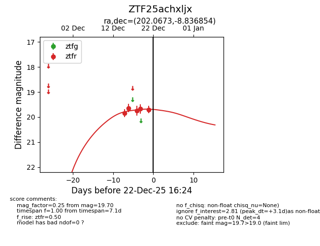
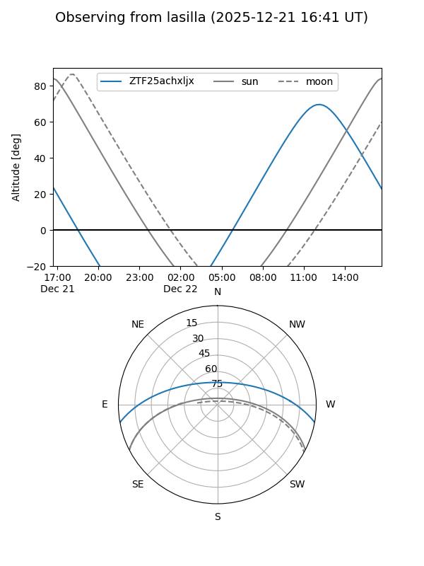
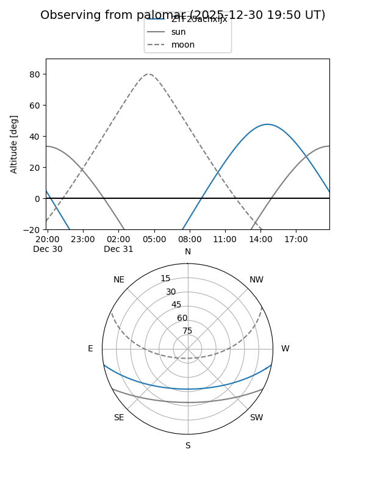
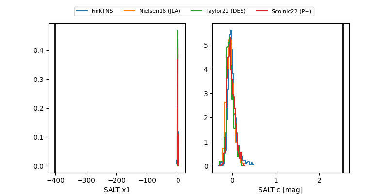

ZTF25achxljx
Target ZTF25achxljx at 2025-12-18 15:57
Aliases and brokers:
FINK: fink-portal.org/ZTF25achxljx
Lasair: lasair-ztf.lsst.ac.uk/objects/ZTF25achxljx
ALeRCE: alerce.online/object/ZTF25achxljx
alt names
ZTF25achxljx (ztf,fink_ztf)
Coordinates:
equatorial (ra, dec) = 202.0673,-8.83685
equatorial (HMS+DMS) = 13:28:16.14,-08:50:12.67
galactic (l, b) = (318.1438,+52.94363)
Photometry
last ztfr=19.75
3 ztfr detections
Lightcurve

Visibility


Additional plots
